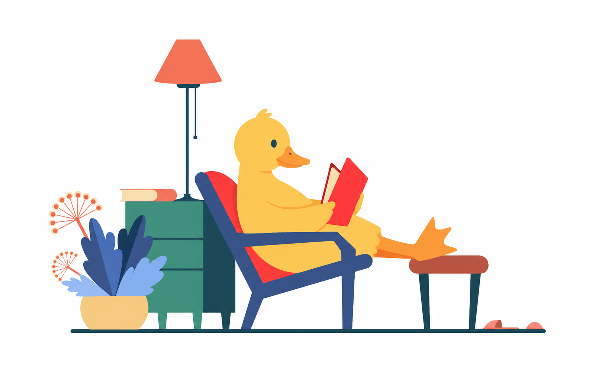

A Importância dos Clássicos na Formação Literária
Discutimos o papel dos livros clássicos no desenvolvimento de uma base literária sólida, com exemplos de grandes autores.
Leia maisEste é um espaço dedicado ao mundo dos livros, onde compartilho resenhas, análises e discussões sobre literatura clássica e contemporânea. Boa leitura!

Discutimos o papel dos livros clássicos no desenvolvimento de uma base literária sólida, com exemplos de grandes autores.
Leia maisUma análise detalhada sobre uma das maiores obras da literatura mundial e seu impacto cultural.
Leia maisUma seleção de grandes obras da literatura brasileira, desde os clássicos de Machado de Assis até os modernos.
Leia maisAnalisamos como obras distópicas como "1984" e "Admirável Mundo Novo" continuam relevantes no século XXI.
Leia maisEstratégias práticas para incorporar mais leituras no seu dia a dia e se aprofundar no universo literário.
Leia maisExploramos como a leitura pode nos ajudar a entender melhor a nós mesmos e ao mundo ao nosso redor.
Leia maisDicas e sugestões de livros para crianças, com o objetivo de despertar o amor pela leitura desde a infância.
Leia mais